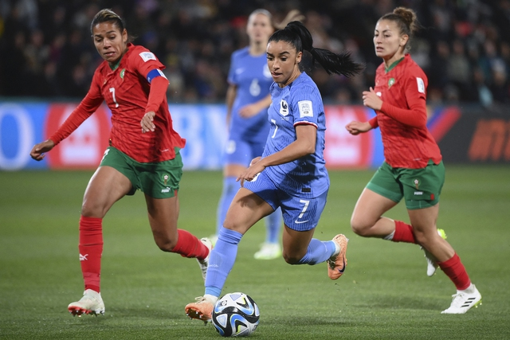

Thắng dễ Ma Rốc, Pháp đụng độ chủ nhà Úc ở tứ kết World Cup nữ 2023
Thứ ba, 08/08/2023, 19:58 (GMT+7)
Không tốn quá nhiều sức, Pháp đã có chiến thắng đậm 4-0 trước Ma Rốc ở vòng 16 đội World Cup nữ 2023 diễn ra ngày 8.8, để vào tứ kết đụng độ chủ nhà Úc. Đội tuyển nữ Pháp được đánh giá cao hơn hẳn đối thủ Ma Rốc ở cuộc đối đầu tại Adelaide (Úc). Sau khi các ứng viên vô địch như Mỹ, Đức và Brazil phải dừng bước sớm, Pháp (đội xếp hạng 5 thế giới) đang có nhiều cơ hội để nhắm đến ngôi cao nhất tại World Cup nữ năm nay. Tuy nhiên, HLV Herve Renard của đội tuyển nữ Pháp đặt sự cảnh giác rất cao với Ma Rốc, dù đối thủ mới lần đầu góp mặt ở World Cup.
Đội tuyển nữ Ma Rốc phục hồi sau trận thua đậm 0-6 trước Đức để lọt vào vòng 16 đội, bằng các chiến thắng đều cùng tỷ số 1-0 trước Colombia và Hàn Quốc tại bảng H. Họ là đội có thứ hạng thế giới thấp nhất còn lại góp mặt ở vòng này và kém 67 bậc so với Pháp. Sự thận trọng của HLV Renard, người từng dẫn dắt đội tuyển nam Ma Rốc trong 3 năm, là điều dễ hiểu khi Pháp đã bị Jamaica cầm hòa không bàn thắng trong trận mở màn vòng bảng. Pháp sau đó có 2 màn trình diễn ấn tượng, đánh bại Brazil (2-1) và Panama (6-3) để đoạt vé đi tiếp.
Giới thiệu
Tell Ur Mom II - Winno ft. Heily「Cukak Remix」/ Audio Lyrics Video
Follow Me

Liên hệ
Điện thoại: 0987654321
Email: web1013@dinhnt.com